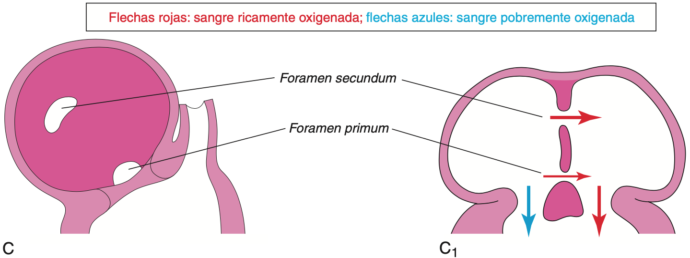

División de la aurícula primitiva
A, Agujero oval permeable debido a la reabsorción del primum localizaciones en septum anómalas. B, Agujero oval permeable causado por la reabsorción excesiva del septum primum (defecto de colgajo corto). C, Agujero oval permeable debido a un agujero oval excesivamente grande. D, Agujero oval permeable debido a un agujero oval excesivamente grande y a la reabsorción excesiva del septum primum. E, Defecto del cojinete endocárdico con CIA de tipo foramen primum. La sección adyacente muestra la hendidura en la valva anterior de la válvula mitral. F, CIA de tipo seno venoso. El defecto alto en el tabique se debía a la absorción anómala delseno venoso en la aurícula derecha. En E y F se puede observar que la fosa oval se ha formado normalmente.
A – A 1:
El septum primum es una fina membrana con configuración semilunar que crece hacia los cojinetes endocárdicos desde el techo de la aurícula primitiva, dividiendo parcialmente la aurícula común en las mitades derecha e izquierda. A medida que el septum primum (cuya configuración es similar a la de una cortina) crece, entre su borde libre semilunar y los cojinetes endocárdicos aparece una abertura grande, el foramen primum. Este agujero actúa como un cortocircuito que permite el paso de la sangre oxigenada desde la aurícula derecha hasta la aurícula izquierda. El foramen primum se reduce progresivamente de tamaño y desaparece a medida que el septum primum se fusiona con los cojinetes endocárdicos AV fusionados, formando el tabique AV primitivo.
B – B1 y C – C1:
Antes de que desaparezca el foramen primum, en la parte central del septum primum aparece una serie de zonas de perforación debidas a apoptosis. Cuando el septum primum se fusiona con los cojinetes endocárdicos fusionados, estas zonas de perforación presentan coalescencia y se forma otra abertura en el septum primum, el foramen secundum . Al mismo tiempo, el borde libre del septum primum se fusiona con la parte izquierda de los cojinetes endocárdicos fusionados, lo que da lugar a la obliteración del foramen primum. El foramen secundum mantiene el cortocircuito de la sangre oxigenada desde la aurícula derecha hasta la aurícula izquierda.
D – D1 , E – E1 , F – F1 y G – G1:
El septum secundum es un pliegue muscular grueso y con configuración de semiluna que crece desde la pared ventrocraneal de la aurícula derecha, inmediatamente adyacente al septum primum. A medida que este grueso tabique crece durante la quinta y sexta semana, cubre gradualmente el foramen secundum en el septum primum. El septum secundum forma una partición completa entre las aurículas; en consecuencia, se forma un agujero oval (foramen ovale).
H – H1:
La parte craneal del septum primum, que inicialmente está unida al techo de la aurícula izquierda, desaparece gradualmente. La parte restante del septum primum, unida a los cojinetes endocárdicos fusionados, forma la válvula del agujero oval, con forma de colgajo.